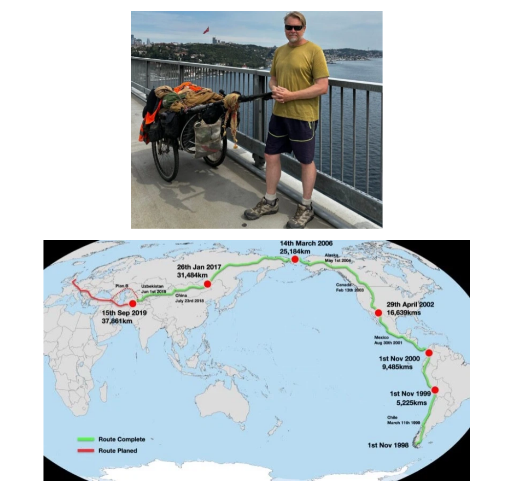
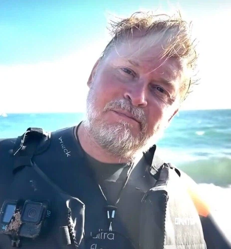

https://bbs.ruliweb.com/best/board/300143/read/77255385

1998년 배, 자동차, 기차 등 교통수단을 전혀 이용하지 않고
오직 걸어서 세계일주하던 칼 부쉬비(karl bushby)

10월 초 해협을 해엄쳐 드디어 영국에 도착했고
오늘 드디어 자기 집에 돌아와 28년만에 어머니를 만남
https://bbs.ruliweb.com/best/board/300143/read/77255385

1998년 배, 자동차, 기차 등 교통수단을 전혀 이용하지 않고
오직 걸어서 세계일주하던 칼 부쉬비(karl bushby)

10월 초 해협을 해엄쳐 드디어 영국에 도착했고
오늘 드디어 자기 집에 돌아와 28년만에 어머니를 만남
오 재미있습니다.
ㅋㅋㅋ 매일 20km씩 걷는데 왜 살이 빠지지 않는걸까 ㅋㅋㅋㅋ
아구창 교수님 연전연승
영양밸런스 불균형과 간식을 계속 먹음 ㅋㅋ
20km로 연소 못할 정도로 고칼로리 간식을 드시더라
한 끼도 어지간한 사람 하루 섭취칼로리를 드시는데 택도 없지
20km면 5시간 걷는건데 안빠질만해 ㅋㅋ
나도 전국 걸어서 여행할때 하루 평균 30키로정도씩 걸었는데 살 쪄서 돌아옴ㅋㅋㅋㅋ
잠시 멈춘다고 비행기 타길래 먼가 했더니..미국 횡단..
맨처음영상이 10개월전인데 얼굴변화로는 20년전같음 ㄷㄷㄷ
배링해협인가? 저기도 헤엄쳐서 건넘?
해협 얼었을때 걸어감
베링해협이랑 저기 카스피해 건널때는 배가 따라옴
존나 헤엄치다가 잘때되면 좌표 찍어두고 배에서 자고 멈춘데서부터 다시 시작
ㄷㄷ
300년 뒤엔 화성일주하고 있을까
걸어서 화성까지
뭐 오디세우스임? ㅋㅋㅋㅋㅋㅋㅋㅋ
이거 게시글보고 꽂혀서 유튜브에서 북아메리카 최북단부터 남아메리카 최남단까지 운전하는영상 있을까 찾아보니 있더라 시벌 미친인간들
리어카끌고 팬아메리카 하이웨이 걸은 일본인도 있음 ㅋㅋ
파나마 운하 쪽이 ㄹㅇ 마굴이라던데 어케 살아서 돌파했네
아 그러게 다리엔갭 어떻게통과했지
밀입국 난민들도 몇만명씩 통과하는거보면 준비잘해서 가면 갈만한듯
오디세우스보다 오래걸렸네ㅋㅋㅋㅋ
2006년이랑 2017년 사이엔 뭔일이 있었던걸까
비자문제때문에 미국인가 멕시코쪽에 베이스캠프(라고하고 별장이라읽음)에서 버티면서 존버하는데 비자 안나오고(길잃어서 군사구역 들어간거때문에 추방당했었기 때문)돈까지 오링나서 아들이랑 미국횡단으로 후원금파밍하고 그런 많은 일이 있었음
비행기타고 집에가서 쉬다오고<-아님
전제조건 자체가 일주 완주 전까지 우리집 안밟는다가 조건이라 멕시코나 미국쪽에 베이스캠프 만들어두고 그쪽에서 시간보냄
마냥 쉬러가는게 아니라 ㅅㅂ 돈문제랑 비자문제때문에...
실크로드 자전거 타고 간놈도 있는데 저분도 대단하네..
한국 안왔으니 무효~
시베리아랑 파나마는 어떻게 뚫은거냐 ㄷㄷ
??? : 어 나 쓰레기 좀 버리고올게
저 아저씨 영국 도착해서 백인이 전보다 줄었다고 말함
에이 세계일주를 뭔 출퇴근하듯이 해
안그러면 불법체류 걸려서 국외추방이야
여러번 쪼개서 했다고해도 어쨋든 인간승리 아니냐
아프리카는 못갔네
하긴...
28년이나 걸린다고 좡형은 8년 잡던데
걸어서 세계 여행하는 한국인 유튜바도 있더라 잼씀
https://www.youtube.com/@walkforneko